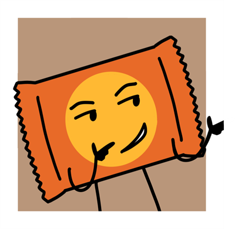

- Alias
- PBC
- Object
- Wrapped peanut butter cup
- Identity
- He/him, male
- Time in the Inbetween
- ~8 blooms
- Favorite food
- —
- Favorite drink
- —
- Hobbies
- —
- Favorite thing to do
- —
- Favorite resident
- Himself
Peanut Butter Cup, often referred to as PBC, is a generic egotistical, ignorant, rude, conceited, pompous, smug, pretentious, belittling, narcissistic… douchebag. Even though he is fairly new to the House, he acts as if he knows it the best. He regularly teases those who are scared or confused about something regarding the Inbetween. He does not help others unless there is something in it for him. Most residents, understandably, dislike him.

Trivia
- He's his own hype man. He spends a lot of his time in front of the mirror.
- Ironically, he cant seem to face Mirror.
- He says he has witty comebacks for anything anyone has to throw at him, despite having a habit of freezing up completely.
- He claims to know how to leave The Inbetween, but won't share it because he prefers his new life, and says "who would want to go back to what they had before?".
- He can't leave.
Voice this character
Voice claim: B.J. Novak as Ryan Howard
The voice claim is only a guide — you don't have to sound exactly like them. It's meant to show the character's general mood and tone.
Voice notes
- PBC is smug first, everything else second. His default mode is slow, deliberate sarcasm — he takes his time with condescension like he's enjoying it.
- He's not intimidating, just deeply, specifically annoying. He talks over people, answers questions nobody asked, and gives unsolicited opinions with complete confidence.
- Most important: the frustration in the new resident scene should feel petty rather than threatening. He's not mad, he's inconvenienced.
Audition Lines
TALKING TO A NEW RESIDENT
(Sarcastic) Whattt? You're new here? Ohh nooo… Yeah, you're so gonna hate it. No, yeah, it's soooo bad. Nothing about this place is good. If you think you're dead, you are. I'm not real, either. Yep. Sorry. ... (A little frustrated) Oh my god, you're still freaking out? Dude, you got teleported. It happens. Adapt. ... Now you're asking me for directions? (Sigh) Figures. Most people here are clueless anyway. Let's go. Trust me, I know how this place works. I've seen things around here you wouldn't understand. (Pause) Rule number one of survival: listen to me.
TALKING ABOUT HIMSELF
My favorite food? Don't got one. My favorite drink? Don't got one of those either. No, I don't have a favorite color. Or activity. Or hobby. Or resident, that question is stupid. I'm not telling you anything about myself… other than I know everything and you don't. Go interview someone else.
SHOWING OFF
Back on Earth, I was top shelf checkout material. You know how many people picked me over actual meals? I had brand recognition, I-I used to be financially successful! I survived summer gas station temperatures. You think THIS scares me?